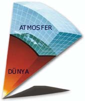
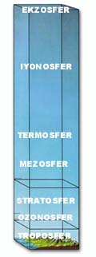

ATMOSFERÝN KATMANLARI
Kuran ayetlerinde evren hakkýnda verilen bilgilerden biri, gökyüzünün yedi kat olarak düzenlendiðidir:
“Sizin
için yerde olanlarýn tümünü yaratan O'dur.
Sonra
göðe istiva edip de onlarý yedi gök olarak
düzenleyen
O'dur. Ve O, herþeyi bilendir. „
(Bakara Suresi, 29)
“Sonra,
duman halinde olan göðe yöneldi;
Böylece
onlarý iki gün içinde yedi gök olarak tamamladý
ve
her bir göðe emrini vahyetti...„
(Fussilet Suresi, 11-12)
|
Dünya,
yaþam için gerekli olan özelliklerin tümüne sahiptir. Bunlardan bir tanesi
de canlýlarý koruyan özel bir kalkan görevini yerine getiren atmosferdir.
Bugün Dünya atmosferinin üst üste dizilmiþ farklý katmanlardan meydana
geldiði bilinmektedir. Atmosfer aynen ayette bildirildiði gibi, tam yedi
temel katmandan oluþmaktadýr. Bu, elbette ki Kuran'ýn mucizelerinden biridir.
|
 |
Kuran'da
pek çok ayette kullanýlan gök kelimesi tüm evreni ifade etmek için kullanýldýðý
gibi, Dünya göðünü ifade etmek için de kullanýlýr. Kelimenin bu anlamý
alýndýðýnda, Dünya göðünün, bir baþka deyiþle atmosferin, 7 katmandan oluþtuðu
sonucu ortaya çýkmaktadýr.
Nitekim bugün Dünya atmosferinin üst üste dizilmiþ farklý katmanlardan meydana geldiði bilinmektedir. Üstelik aynen ayette bildirildiði gibi, tam yedi temel katmandan... |
Bilimsel bir kaynakta bu konu þöyle açýklanýr:
Bilim
adamlarý atmosferin birçok katmandan oluþtuðunu keþfettiler. Katmanlar,
basýnçlarý ve bunlarý oluþturan gazlarýn bileþimi gibi belirgin fiziksel
özelliklerle birbirlerinden farklýlaþýrlar... Atmosferin Dünya'ya en yakýn
katmaný "TROPOSFER"dir. Atmosferin toplam kütlesinin %90'ýný oluþturur...
Troposfer'in üzerindeki katman "STRATOSFER" dir... Stratosfer'de ultraviyole
ýþýnlarýnýn emildiði katmana "OZONOSFER" adý verilir... Stratosfer'in üzerindeki
tabakaya ise "MEZOSFER" adý verilir... Mezosfer'in üzerinde "TERMOSFER"
yer alýr... Ýyonize olmuþ gazlar Termosfer'in içinde "ÝYONOSFER" adý verilen
baþka bir katman oluþtururlar... Dünya atmosferinin en dýþ tabakasý ise
450 km. den 960 km. ye kadar uzanýr. Bu katmana "EKZOSFER" adý verilir.
| 14 asýr önce, gökyüzünün
yekpare bir bütün sanýldýðý dönemlerde Kuran'da, gökyüzünün katmanlardan
meydana geldiði, üstelik bu katmanlarýn sayýsýnýn "yedi" olduðu mucizevi
bir biçimde haber verilmekteydi.
Çaðdaþ bilim ise Dünyamýz'ý çevreleyen atmosferin belli baþlý "yedi" ana tabakadan meydana geldiðini ancak yakýn zamanlarda ortaya koydu. |
 |
Bu kaynakta belirtilen katmanlarýný saydýðýmýzda atmosferin ayette bildirildiði gibi tam olarak 7 tabakadan oluþtuðunu görürüz: |
Bu konuyla ilgili bir diðer önemli mucize de Fussilet Suresi'nin 12. ayetinde geçen "Her bir göðe emrini vahyetti" ifadesinde yer almaktadýr. Yani ayette Allah'ýn her tabakayý belli bir görevle görevlendirdiði belirtilmektedir. Gerçekten, daha önceki bölümlerde de gördüðümüz gibi, yukarýda saydýðýmýz tabakalarýn her birinin insanlarýn ve yeryüzündeki tüm canlýlarýn yararý açýsýndan çok hayati görevleri vardýr. Yaðmurlarýn oluþmasýndan, zararlý ýþýnlarýn engellenmesine, radyo dalgalarýnýn yansýtýlmasýndan, gök taþlarýnýn zararsýz hale getirilmesine kadar her tabakanýn kendine özgü bir iþlevi bulunmaktadýr.
Örneðin bu görevlerden biri bilimsel bir kaynakta þöyle bildirilmiþtir:
Dünya'nýn atmosferi 7 katmandan oluþmaktadýr. En alttaki tabaka Troposfer'dir. Yaðmur, kar ve rüzgar yalnýzca Troposfer'de oluþur.
20.
yüzyýl teknolojisi olmadan tespit edilmesi hiçbir biçimde mümkün olmayan
bu bilgilerin 1400 yüzyýl önce indirilmiþ olan Kuran-ý Kerim'de açýkça
bildirilmesi ise, çok büyük bir mucizedir.